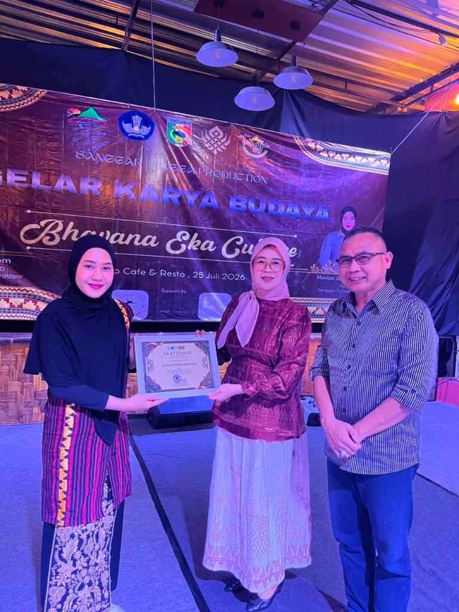
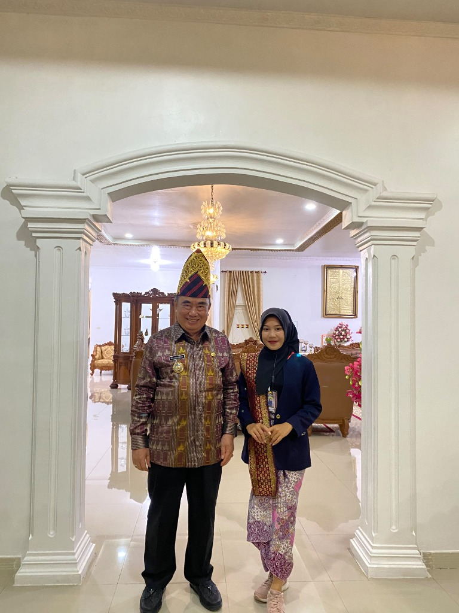
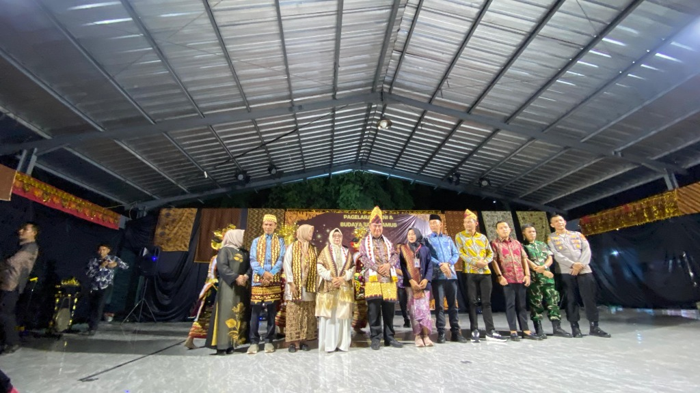
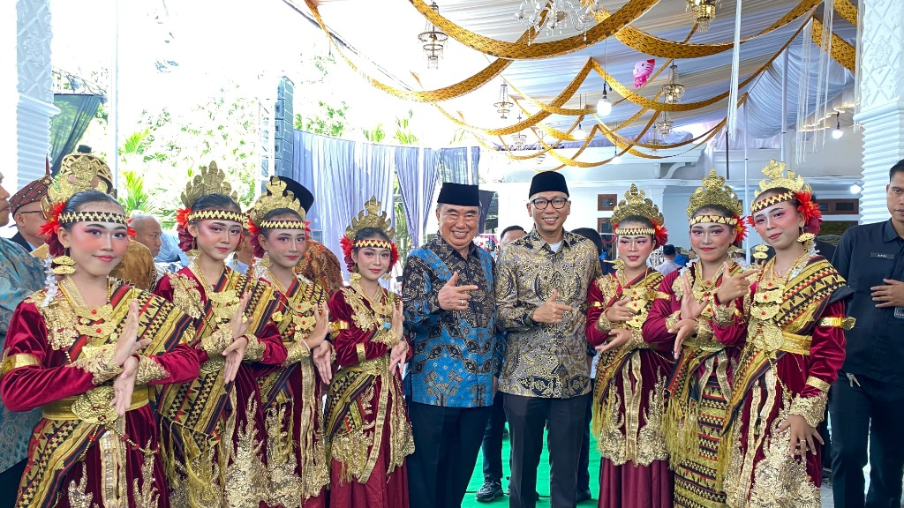
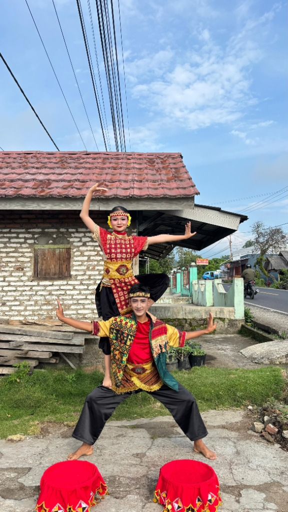
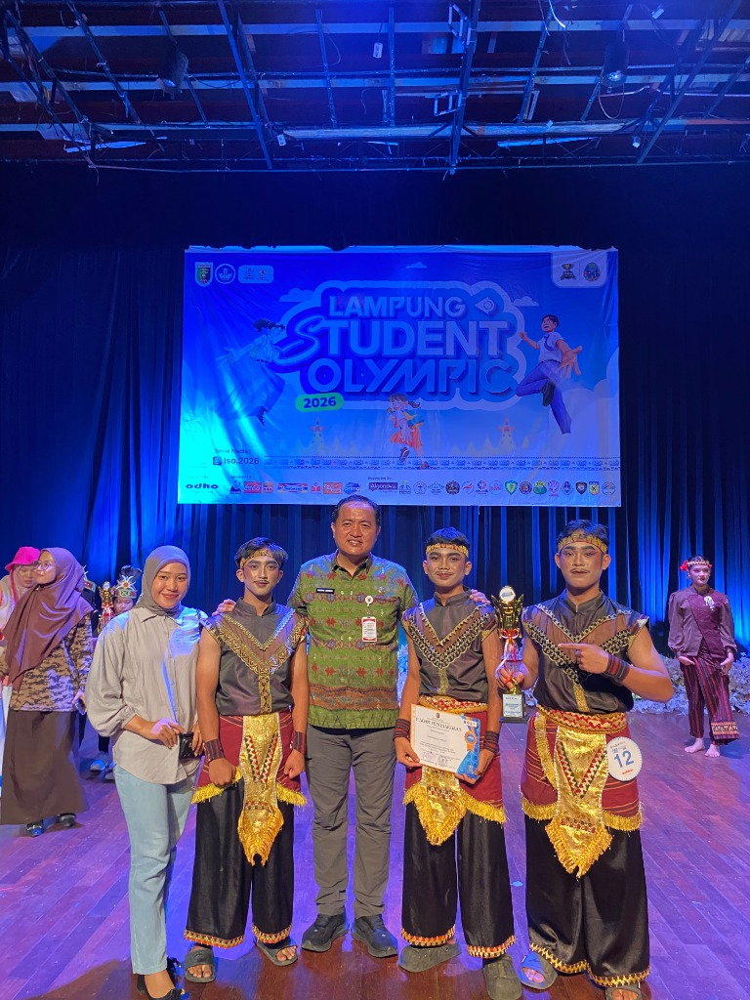

Melestarikan Keagungan Seni Tari & Jiwa Nusantara
Tungga Production mempersembahkan keindahan seni tari tradisional dan kreasi kontemporer Nusantara dengan koreografi berkelas, kostum megah, dan penari berdedikasi tinggi untuk berbagai perhelatan istimewa.
Tungga Production
Eksplorasi Budaya • Estetika • Dedikasi
Tentang Tungga Production
Wadah kreativitas seni pertunjukan yang merawat tradisi leluhur sekaligus melahirkan inovasi gerak kontemporer bernilai estetika tinggi.

Menghidupkan Cerita Nusantara Lewat Setiap Langkah Gerak & Irama
Sanggar Tungga Production lahir dari komitmen kuat melestarikan kekayaan seni tari dan budaya tradisi Lampung serta Nusantara. Melalui dedikasi tinggi, sanggar kami telah menyelenggarakan pementasan akbar seperti Gelar Karya Budaya "Bhavana Eka Culture" di Tanggamus dengan melibatkan puluhan penari cilik dan remaja berbakat.
Kami percaya bahwa seni adalah warisan luhur yang menghubungkan masa lalu dengan masa depan. Setiap pementasan dipersiapkan dengan integritas tinggi—mulai dari keselarasan musik pengiring, kesakralan gerak sembah, hingga keanggunan busana adat dan mahkota siger emas kebanggaan daerah.
Kearifan Tradisi
Menjaga orisinalitas pakem seni budaya Nusantara dengan riset dan penghayatan mendalam.
Koreografi Dinamis
Sentuhan kreatif modern yang memukau tanpa menanggalkan nilai luhur seni tradisi.
Produksi Berstandar Tinggi
Didukung penata tari, desainer busana adat, dan tim seniman panggung profesional.
Solusi Seni untuk Momen Istimewa
Tungga Production siap memeriahkan berbagai agenda formal, pesta pernikahan adat, hingga pertunjukan festival internasional.
Tari Penyambutan & Adat Pernikahan
Pementasan prosesi tari penyambutan pengantin dan tamu kehormatan (Tari Pasambahan, Tari Sekapur Sirih, Cucuk Lampah) dengan nuansa sakral dan megah.
- Penari profesional berpenampilan anggun
- Kostum adat & mahkota lengkap berornamen emas
- Tabur bunga & properti perunggu adat
Tari Kreasi Nusantara & Festival
Koreografi kontemporer teatrikal yang memadukan ritme dinamis dari berbagai daerah Nusantara, ideal untuk pembukaan acara perusahaan dan festival budaya.
- Koreografi eksklusif sesuai tema acara
- Dinamika panggung dramatis & atraktif
- Audio musik aransemen orisinal
Ensemble Musik Tradisional Live
Pengiring musik tradisional langsung dengan gamelan, kendang, talempong, saluang, dan instrumen perkusi etnik yang menggugah suasana perayaan.
- Pemain musik (nayaga) berpengalaman
- Set instrumen autentik berbahan perunggu
- Sinkronisasi gerak tari yang presisi
Kelas Tari & Workshop Sanggar
Program pelatihan seni tari bagi anak-anak, remaja, hingga dewasa untuk mengasah keluwesan fisik, rasa musikalitas, dan pemahaman budaya bangsa.
- Kurikulum bertingkat (dasar - mahir)
- Evaluasi berkala & kesempatan pentas panggung
- Instruktur sabar dan bersertifikat
Ketua, Pembina & Pelatih Seni
Mengenal tokoh dan pegiat seni di balik karya-karya megah Sanggar Tungga Production. Klik kartu profil untuk melihat biodata dan riwayat lengkap mereka.
Noviza Juwita
Ketua & Pimpinan SanggarPenggagas perhelatan akbar Gelar Karya Budaya Bhavana Eka Culture & penanggung jawab pelestarian seni tari Sanggar Tungga Production.
Dra. Hj. Siti Rohmah
Pembina & Penasihat Seni BudayaMembina pengembangan kurikulum tari adat dan menjalin kemitraan kebudayaan daerah Kabupaten Tanggamus, Lampung.
H. Hendra, S.Kom
Penasihat & Koordinator ProduksiMengarahkan manajemen produksi panggung teater, tata kelola sanggar, dan kemitraan lembaga kesenian.
Anisa Larasati
Penata Rias & Mahkota SigerAhli tata rias pengantin adat Lampung, pemasangan mahkota siger emas kebanggaan daerah, dan tata busana kain tapis.
Dokumentasi Galeri Karya
Kilas balik momen keindahan pementasan panggung, harmoni gerak tari tradisional, torehan prestasi penghargaan kejuaraan, serta arsip visual Sanggar Tungga Production.
Highlight Pementasan
Dokumentasi eksklusif pagelaran akbar dan atraksi formasi tari tradisi kreasi pilihan Sanggar Tungga Production.

Ketua Sanggar dan Bupati Tanggamus
Apresiasi hangat dan sinergi pembinaan seni budaya bersama Bupati Tanggamus.



Prestasi & Penghargaan
Bukti nyata dedikasi, kedisiplinan berkesenian, serta kerja keras penari dan pembina Sanggar Tungga Production.

Juara & Penghargaan Lampung Student Olympic 2026
Torehan prestasi prestisius oleh kontingen penari muda Sanggar Tungga Production pada ajang bergengsi Lampung Student Olympic 2026 kategori seni tari kreasi tradisi.
Penampil Utama Budaya
Apresiasi Pemkab Tanggamus pada pagelaran seni akbar daerah.
Pelestari Adat Lampung
Komitmen membina generasi muda mencintai nilai tradisi Nusantara.
Koleksi Semua Foto (49)
Jelajahi seluruh dokumentasi pementasan panggung, rias busana mahkota siger, sesi gladi resik, dan kegiatan kebersamaan Sanggar Tungga Production.
Keunggulan Tungga Production
Standar profesionalisme tinggi yang menjadikan kami pilihan terpercaya untuk berbagai pementasan resmi dan pertunjukan bergengsi.
Penari Profesional & Terlatih
Setiap penari memiliki jam terbang tinggi, penguasaan wiraga, wirama, dan wirasa yang sempurna.
Busana Mewah & Autentik
Koleksi busana menggunakan bahan songket asli, bordir benang emas, dan aksesoris logam berkualitas.
Fleksibel & Disesuaikan Kebutuhan
Durasi, jumlah penari, dan konsep pertunjukan dapat dirancang khusus sesuai tema acara Anda.
Manajemen Waktu yang Disiplin
Kedatangan tepat waktu untuk gladi resik, persiapan tata rias rapi, dan koordinasi panggung yang terstruktur.
Tungga Production
Sanggar Seni Tari & Budaya
Wujudkan Pertunjukan Berkesan Bersama Kami
Konsultasikan rencana acara Anda, pemilihan tarian adat, penyesuaian jadwal latihan, atau pendaftaran kelas tari sanggar. Kami siap membantu dengan sepenuh hati.
Pekon Kelungu kec. kotaagung Kab. Tanggamus
Senin – Sabtu: 09.00 – 20.00 WIB
Kirim Pesan / Booking Penampilan
Isi formulir di bawah ini untuk terhubung langsung ke WhatsApp kami: